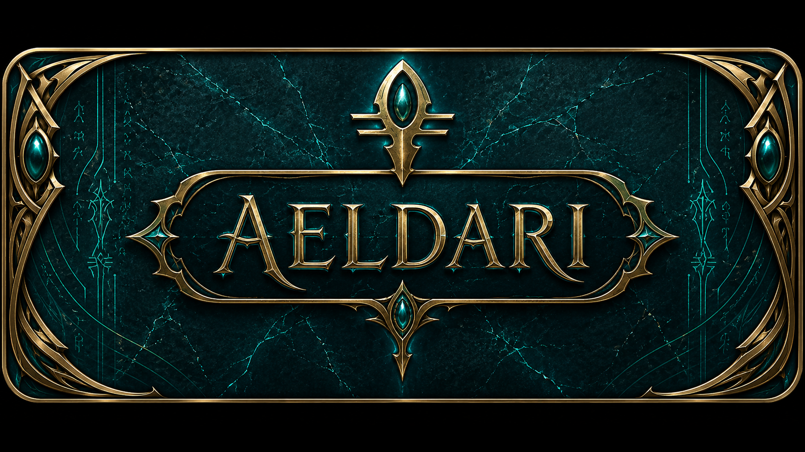
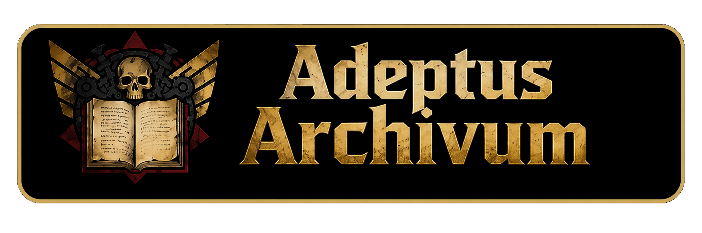
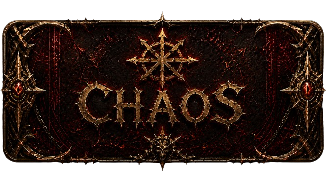
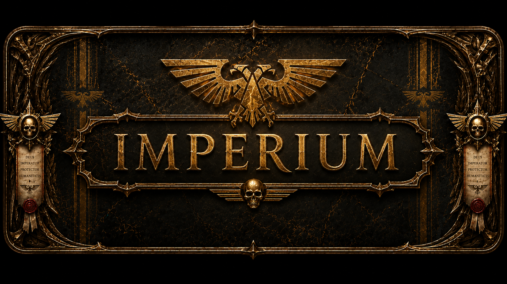
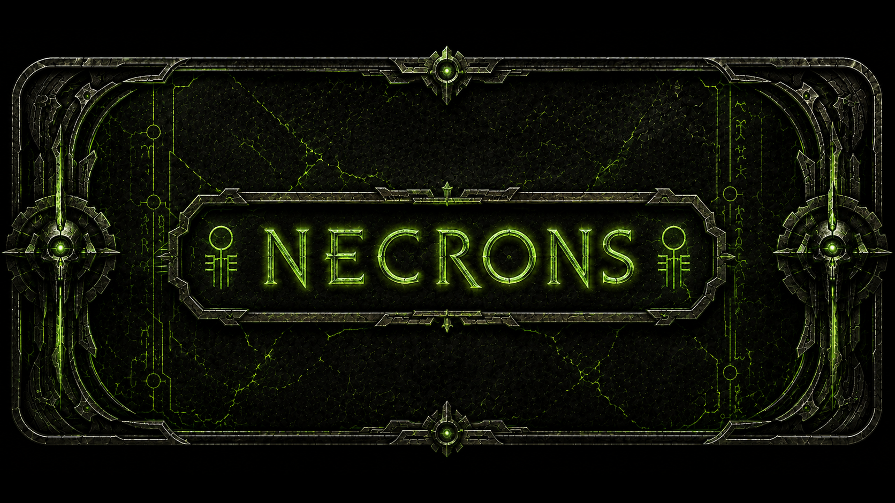
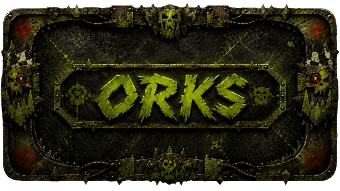
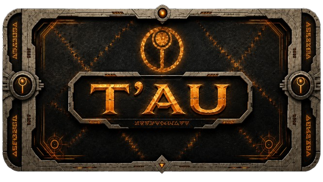
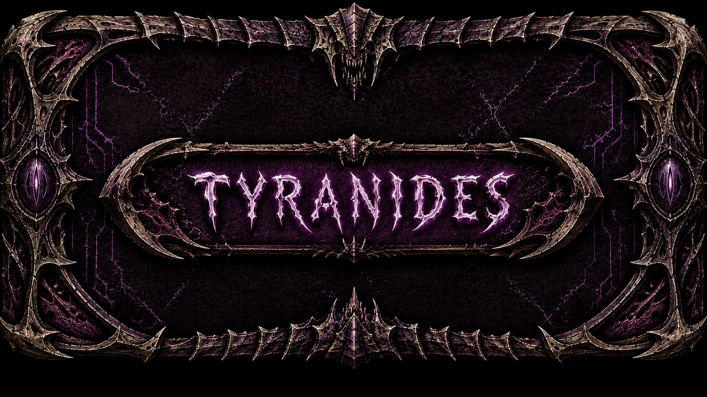

Aeldari


La galaxie n’est plus qu’un charnier d’étoiles, de dogmes et de ruines.
Ici sont consignées les factions qui tuent, dévorent, corrompent ou dominent.
Nulle gloire dans ces archives, seulement la guerre, la foi et la peur.
Consultez les dossiers, puis acceptez l’horreur qu’ils révèlent.






